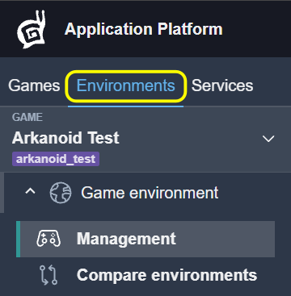
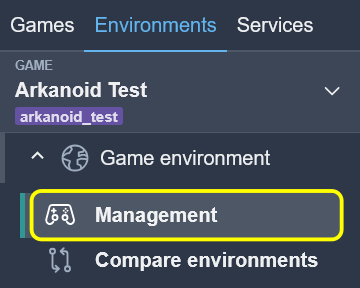
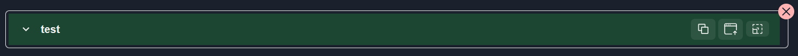
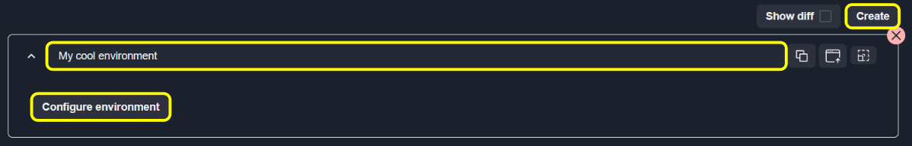
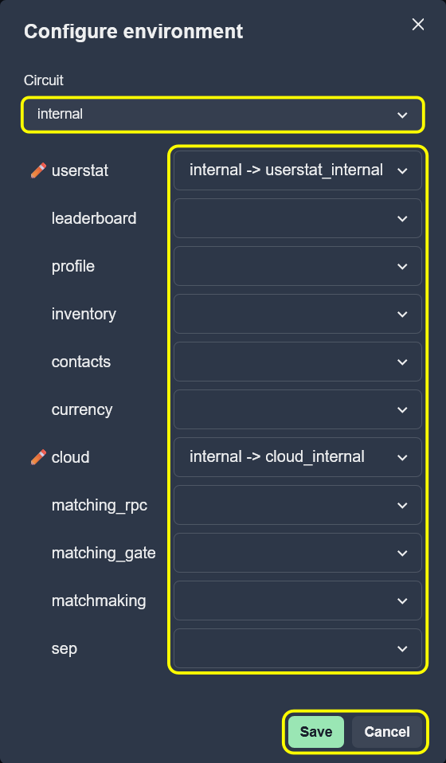
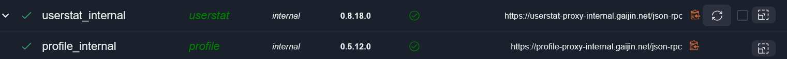
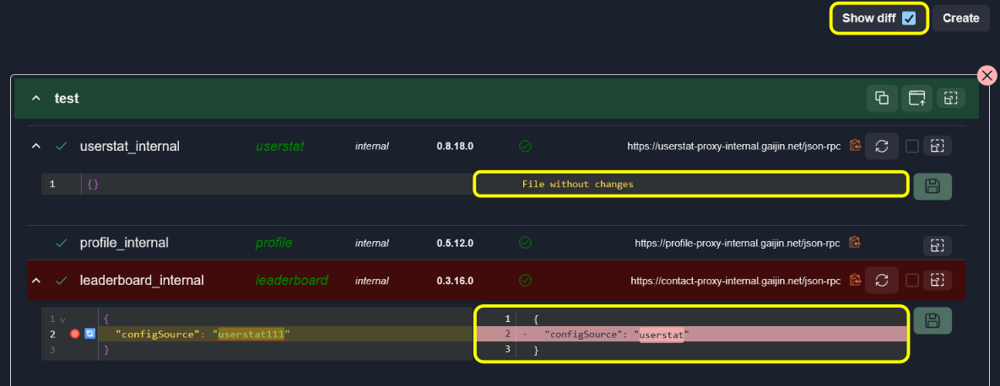
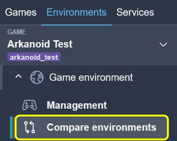

Workspaces: Environments
The Environments workspace is designed for managing game deployment environments and their service configurations. Each environment represents a deployment configuration containing multiple services with their settings.
{kind=link}

The Environments interface displays all game environments with their configured services, versions, and health status.
You can create and delete environments, add or remove services, edit service configurations, view service versions and health status, compare configurations with diff view, and copy/upload environment configurations between environments.
Management
{kind=link}

Each environment is displayed as an accordion item with the following elements:
Environment name – Unique identifier
Remove button – Deletes the environment
Copy/Upload buttons – Bulk configuration operations
Fullscreen button – Expands to fullscreen mode
{kind=link}

Create and Remove Environment
To create a new environment:
Click the Create button at the top of the page.
Enter the environment name.
Add services using the Add new service button.
To remove an environment:
Click the X button in the top-right corner.
Confirm the removal.
{kind=link}

Configure Environment
To configure environment:
Configure service settings as needed.
Click Save to save the new environment.
{kind=link}

Service Management
Each service within an environment displays:
Green checkmark (left) – Service is found and correctly identified in the system
Service ID – Unique identifier
Service Type – Type of service (shown in green italics)
Circuit – Circuit where the service is deployed
Version – Current service version
Health status (right) – Green checkmark if healthy, red warning if errors
Reload button – Discard local changes and reload from server
Checkbox – Select service for bulk copy operations
{kind=link}

To add a service:
Expand the environment.
Click the Add new service button.
Select a circuit from the dropdown.
Choose the service type and service ID.
Click Add to include the service in the environment.
To remove a service:
Click the Remove button next to the service.
Services that support configuration editing can be expanded to view and edit their settings. Configurations are loaded automatically when expanded. Edit the content in the Code editor with schema validation; changes are tracked automatically.
Note
Changes are stored locally until Save is clicked. Use Save button to apply all changes.
The Code editor provides:
Syntax highlighting for JSON
Schema-based autocomplete
Error detection and markers
Line numbers and change indicators
Toggle the Show diff option to enable side-by-side comparison view. This shows the deployed version on the left and your current changes on the right, with highlighting for additions, deletions, and modifications.
{kind=link}

Copy and Upload Operations
Copy and Upload operations allow transferring configurations between environments.
Use checkboxes to select services, then click the Copy button. Selected service configs are copied to clipboard in JSON format.
To upload, click the Upload button and paste JSON data containing service configurations. Confirm the upload and matching service configurations will be updated with the new content.

Example:
{
"serviceType1": "config content...",
"serviceType2": {
"key": "value"
}
}
Note
Uploaded configurations are not automatically saved. Click Save to apply changes.
Changes Management
Service configuration status is shown through background colors:
Green background – Configuration has unsaved changes
Red background – Configuration has validation errors
Standard background – Configuration matches saved version
Compare Environments
Compare environments tool compares game environments.
{kind=link}

The interface works as described in How Comparison Works, where:
Items to compare: Game environments
Grouped by type: Environment type
Elements: Environment configurations